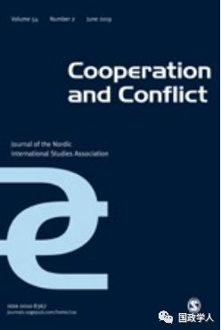
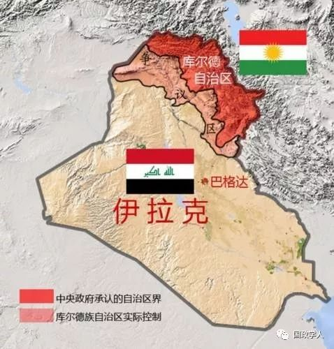

收录于合集

简 介
** 【作者】** 本杰明•麦昆（Benjamin MacQueen），莫纳什大学社会科学学院政治学与国际关系学系副教授。主要研究方向为中东北非地区政治过渡的条件，尤其是外部党派、宪法组成和有关地方政治参与的选举法改革。
** 【 编译 】** 许文婷
** **【 审校 】****李玉婷、扎西旺姆、高嘉琳 ****
** **【 来源 】****Cooperation and Conflict, vol. 50, no. 4, Dec. 2015, pp. 423–439.
** 【期刊】** 合作与冲突是一份与北欧国际关系协会（Nordic International Studies Association）合作发行的同行评审期刊，传统上聚焦于北欧和欧洲事务。该刊2018年的影响因子为1.877，在政治学期刊中排名54/176，在国际关系期刊中排名21/91。

民主 、选举 与 “ 事实国家 ” 的 困境： 伊拉克库尔德地区政府
Democratization, elections and the ‘de facto state dilemma’: Iraq’s Kurdistan Regional Government
本杰明•麦昆（Benjamin MacQueen）
内容提要
事实国家 **（ de facto states）**是国际政治中的一类非正常但饱受关注的行为体，当前的研究已经很好地讨论了它们对国家主权和国家地位的影响，但对于它们的内部机制，尤其是有关民主发展和政治参与制度的方面还所涉不多。本文以1992年-2014年的伊拉克库尔德地区政府为案例，探讨事实国家民主化的原因。关于事实国家的内部机制有两种相反的结论：有研究指出 国家 建构的过程（ state-building process） 促进了 此前 分裂 主义冲突和 交战双方 的政治权 力 继承所 造成 的 排他式政治。 ****另一方面， 事实国家 需要加快制度建构以获得 国际 对其国家地位的承认， 它们必将 聚焦民主化以获得国际社会的认可。 ****本文通过对 1992-2014年伊拉克库尔德地区政府的研究，发现在事实国家状态与民主化之间存在正相关关系，但这并非由于来自国家间层面的规范压力（normative pressure），而是因为民主化作为国家建构的重要部分，使政治精英们能够管控国内冲突并在其占领的领土上建立政权。
文章导读
**1
**
****事实 国家状态与民主化 ****
“事实国家”指在 一 块 领土上 行使 明确且有效的 权力 ， 具备 主权国家的 实际特征 ， 但未获国际认可 ， 不具备 主权国家 法律地位的实体 。 **** “事实国家”的 概念源于对 “ 事实主权 ” （ de facto sovereignty） 和 “ 法理主权 ”(de jure sovereignty) 的 区分 。 判定 “事实主权”的 标准是 在两年以上的时间内，在明确界定的领土内享有相当程度的民众支持的有效自治， 而 “ 法理主权 ” 则与 获得 被承认 的独立地位相联系。 ****事实国家对国家体系的挑战此前已被详细地讨论，但对其内部机制，尤其是其不明确的地位对政治参与和民主化的影响的关注仍然甚少。事实国家对国家建构和民主过渡的影响体现为 两种相反的趋势 ：一方面研究者们强调它们是在 族群 和 民族 冲突 的 背景下产生 的，在很多情况下分裂运动的领导者直接成为了这些新政权的领袖，这一趋势明显地导向了一种排他式政治形式。另一方面，事实国家 为了获 得 国际承认必当强调自己 的 国家属性 和 对国际规范的遵守， 其中 就包括 民主化， 这使得在事实国家内部各种民主机制和公民社会都得以发展起来。这两种趋势都得到了相关证据的证实。
有关 事实国家排他性政治倾向 的理解来源 于以蒂利（ Tilly） 为代表 的 有关 欧洲国家建构的文献。 ****蒂利的思想核心是 国家建构和 集团犯罪 （ organized crime） 间的 类比 ， 认为 以 “战争制造”的形式进行的“强制性剥削”和资源开采是使现代国家统治者扩大对领土的权威的核心要素。 ****但 这种“好战分子的解释”（bellicist account）仅限于早期现代欧洲。对中东、非洲、拉美和亚洲的研究得出了完全相反的结论，认为这些新成立的国家缺乏投射力量的能力，造成了后殖民世界中的“弱国家”。这些研究的代表是米格德尔（Migdal）的“弱国家”范式和杰克逊对“准国家”的检验。
对这一路径的批判产生于20世纪90年代和21世纪初，这种观点认为在早期现代欧洲和其他地方出现的发动战争的狂热已不符合如今的现实。作为对这一批判的回应，金（King）的研究发展了蒂利、米格德尔、杰克逊等人的成果，认为事实国家的特征是它们脱离母国的分裂主义的努力，它们的主权是在冲突中形成的。 对 这些 “国家” 的政治精英而言， 积极 参与对冲突环境 的 维护和随之而来的排他性政治 使 它们能够对新政权产生更大的影响并获得更多的个人利益。 ****这一路径有助于澄清事实上的国家的制度发展与民族解放和后殖民主义之间的关系，并突出了从起义到统治的人员连续性。但它依然无法解释在某些事实国家的民主化和权力轮换中出现的结果变异。
对 蒂利 的 另一大批判是其 欧洲 中心主义 思想 ，蒂利聚焦的是 16-17 世纪 的西欧与北美的 政治组织形式 。 ****拉斯蒂克 （Lustick）对泛阿拉伯一体化的研究就指出了在中东语境下照搬欧洲经验带来的“错误类比”。他提出在中东地区缺乏决定性的外部力量，而这是16-17世纪欧洲和北美国家建构形成时存在的一个显著条件。他同时提到了中东地区现代国家的形成和“事实国家”形成过程的类比。近年来的研究更关注事实国家民主化的不同结果，这一路径认为获得合法性和国际承认是事实国家的典型特征，为此其内部的政治精英必将更大程度地遵守国际社会的原则、规范和标准，其中也包括民主化。但这一路径仍不能完全解释限制这些新生政体中的民主参与的原因。
上述路径对研究事实国家的政治化轨迹做出了贡献，但它们在研究事实国家的体制建设和民主化的加速时都把全球结构性和规范性的压力作为出发点，忽视了更具代表性的来自本地的压力。从另一方面来说，主要从当地语境出发的对事实国家中排他性政治的论证又与这些国家中发生的重大的民主化步骤不一致。这些论证都反映了 民主化研究的趋势 ，特别是了解从专制治理向民主治理过渡的努力，它主要围绕4个主题：对李普塞特（Lipset）现代化理论的改编，即更大的社会复杂性和专业化推动了政治参与;社会力量和社会运动作为变革的压力；积极的经济驱动因素和精英驱动控制下的民主转型。
对 精英驱动 型 过渡 的 关注 源于 亨廷顿 （ Huntington ）的著作 和其 有 关 “ 三波 民主化 ” 的 概念。 ****亨廷顿有关民主的核心概念是民主制度的重要性，即民主在允许民众参与和促进群体间有序权力转移的制度中最为明显。有关这一路径的批判主要集中于其 威权 必然 向民主过渡的线性发展假设 ，以及其对制度的关注。批评者举出的反例是在许多非民主国家形成的 “ 功能失调 均衡 ”（dysfunctional equilibrium）状态。这主要是指戴蒙得（Diamond）提出的“混合政体”（hybrid regimes），即自由民主和选举民主与选举威权政体、伪民主和政治封闭政体同时存在的情况。尤其是“自由独裁”（liberalized autocracy）和“选举威权”（electoral authoritarianism）的存在构成了对这种线性过渡理论基础的挑战。
麦克福尔（McFaul）提出， 制度 只有在它们代表转型时期 主导群体 的利益时才重要 ，不论民主政体还是威权政体均是如此。乔杜里（Chaudhry）等人亦提出过渡主义路径的制度重点更多地关注稳定而不是民主发展。鲁斯托（Rustow）和亨廷顿等人认为制度发展有助于民主系统在早期的不稳定状况中存活，但格迪斯（Geddes）认为对政治制度的关注仅仅反映了“良好制度化的专制政权”的存在。这些有关制度角色的争论至关重要，因为它们提供了对政治参与的方式和水平进行量化和测量的能力。
“混合政体”的发展模型使我们能够理解半民主和非民主的特征范围，但它们存在着一定程度的不精确性，特别是缺乏对事实国家的精细、系统化的比较。为了解决这个问题，研究者们试图重新构建对冷战后国际安全模式和国家能力的理解，尤其关注像联合国和世界银行等国际组织。这在有关事实国家的研究中显得尤为重要，因为治理体系的构建和国家地位的象征是它们获取国际地位的关键。事实国家的政治精英们试图通过在体制内开展大部分活动来建立自己的诚信，并鼓励其内部的人民同样参与其中。达成这一目标的最好方式就是建立选举系统，但同时政治精英们也有在选举中败北而被迫下台的可能性。
作者选取伊拉克库尔德斯坦地区（下简称伊库区）作为分析案例是基于其相比于与其他“事实国家”的几大特殊点：不依靠外部赞助；有基于埃尔比勒的正式治理结构；基本完全控制了占领范围内的杜胡克、埃尔比勒、苏莱曼尼亚三省；与主要的地区国家，尤其是土耳其建立了关系。此外，存在于伊库区的参与体制也是缺乏政治参与机制的中东地区的一个特例。

**2
**
伊拉克北部库尔德地区的治理与民主化
伊拉克库尔德斯坦实行议会民主制和多党派选举，名义上从属于伊拉克共和国议会，但自2004年以来在伊拉克宪法框架下通过库尔德地区政府实行自治。2005年库区政府举行公投，独立支持者占比98.5%。伊库区政治领袖亦不断利用独立做要挟向巴格达的中央政府换取对资源和领土的控制权。库区政府与土耳其建立了紧密的联系，其部分做法违背了伊拉克中央政府的立场。基于此，伊库区被认为是一个事实国家。
可以明显看出伊库区存在一套有效的政治参与体制，其问题在于这种民主功能性（democratic functionality）是否来源于其作为事实国家的地位。通过对2005年前库区治理体系的建立，2005、2010和2014年伊拉克联邦选举及2005、2009、2013年库尔德地区选举的研究， 作者发现 事实 国家的地位与 民主化 是存在正相关关系的， 但 这并非因为寻求 国际支持 ，而是 基于 精英阶层在一个相对同质化的 社群 中巩固 自身地位 的努力。 ****具体来说，库区两个 “传统政党”库尔德民主党和库尔德爱国联盟巩固其权力的努力及库区与中央政府在能源与财政方面的政治争论是早期库区民主体制形成和库区政治精英参与伊拉克全国选举政治的原因。
**3
**
“第一”地区政府时期 的事实独立
伊库区政党的形成早于伊拉克库尔德地区自治机构的建立，库尔德民主党（Kurdish Democratic Party，简称KDP，下简称库民党）是库区首先成立的政党。库民党成立于1946年，领导人为穆斯塔法•巴尔扎尼。早期该党内部一个由巴尔扎尼领导的更保守和传统的部落派系和后来由贾拉勒•塔拉巴尼领导的知识分子马克思主义派别间发生了分裂最终导致1975年库尔德爱国联盟（Patriotic Union of Kurdistan，简称PUK，下简称库爱盟）的成立。尽管60年代库区出现了一定程度的独立倾向，但在70年代两党间争斗的背景下这种独立倾向消失了。
两伊战争期间，伊库区一直保持着伊拉克国家内部自治区的地位，但在残忍的“安法尔行动”（Al-Anfar campaign）后，伊库区的政治生态发生了显著变化，库尔德斯坦迈出了走向正式独立的第一步。两伊战争后，随着伊拉克入侵科威特的失败和联合国对伊拉克的制裁，伊拉克中央政府撤出了北方三省，对其实施了国内禁运，库民党和库爱盟获得了政治主导权。1991年，联合国安理会688号决议决定在伊拉克南部和北部地区设立两个禁飞区，这使得伊库区的经济状况变得低迷。1992年5月库尔德斯坦国民议会（现伊拉克库尔德斯坦议会）举行第一次选举，库民党以两票之差险胜库爱盟，同时形成了库民党和库爱盟南北分立的局面。20世纪90年代两党于1994年和1996年发生了两次冲突，最终于1998年达成停火，双方开始在实施服务和安保安排方面开展合作。
截止到2003年美军进攻伊拉克前夕，库区的政治体制虽无力完全消弭两党间的冲突，但也为萨达姆•侯赛因政权倒台后的政治和解奠定了基础。库区的民主制度和自1992年以来形成的两党均势是其主要特征。民主体制是调节库区内部政治精英利益的重要途径，也是两党保持其统治地位的关键所在。2003年后的政治生态进一步加强了这一进程。
**4
** ****选举政治与“第二库区政府” ****
在美军入侵伊拉克的背景下，库民党与库爱盟在2003年年中控制了伊拉克北部地区，库民党控制了杜胡克和埃尔比勒两省，库爱盟控制了苏莱曼尼亚。2005年库尔德人对北部地区的控制被写入伊拉克宪法，库尔德地区政府（Kurdish Regional Government，KRG，下简称伊库区政府）正式成立。
自2003年来，伊库区政府致力于开展活跃的外交活动，并在国际范围内设立了一系列领事级乃至大使级的办事处。伊库区外交关系中最为显著的就是其快速发展的对土耳其关系。经济方面，伊库区在财政上依然依赖伊拉克中央政府，每年约获得17%的国家预算。因此，伊库区政府积极参与伊拉克国内的民主进程和民主选举，以保证其能从中央政府继续稳定地获得高额财政预算，同时维护其在2004-2005年宪法形成过程中争取到的利益，这有助于解释2010年埃尔比勒与时任总统马利基在那场有争议的选举后进行的合作。
2014年5月，一条直接连接土耳其与伊库区的石油运输管线修通，巴格达与埃尔比勒间的紧张局势不断升级，随后一系列事件使双方关系降至冰点，伊拉克的联邦民主进程停摆。但伊库区内部的民主进程依旧持续，2005,2009和2013年的三次地方选举既见证了地区政治局势的变化，也见证了民主体系本身的发展。三次选举都展现出了高投票率和逐渐减少的不规范投票行为。同时，变革运动（the Gorran Movement）的兴起也打破了两党垄断的政治局面。该运动在2009年的选举中站稳脚跟，并在2013年的选举中将库爱盟逐出了大本营苏莱曼尼亚。
从伊库区政党积极参与国内选举和库区内部民主政治进程的推进可以看出，伊库区的民主化进程和政治精英的民主参与并非为了谋求国际承认，而是出于各时期务实的现实利益考虑。这导致了伊库区民主进程的正规化，特别是这些机制有足够的诚信来应对领导层的一些转变，但它们仍然容易受到精英维持自身权力的影响。
**5
** ****结 语 ****
虽然在没有承认独立主张的情况下实现治理可能是事实国家的定义，但这并不一定会塑造其性质。伊拉克库尔德地区政府确实是国际体系中的一个异常现象，它提供了有关事实国家在这种模糊性背景下的行为的重要见解。其民主发展十分显著，但不是努力获取国际承认的产物，而是一部分政治精英意识到这种结构能够满足他们和库尔德社区的利益后的有意识决定。因此，尽管事实国家的独立要求很重要，但在研究事实国家内部机制时，伊库区的案例提示我们更关注除此以外的方面。民主化进程是在一块领土内建立政治权威的有用工具，一旦获得信誉，就很难被驱逐。因此，在适当的环境下，民主化可能是现代国家建构进程的固有特征。
_ ** _ 本文由国政学人平台编译推荐**
更多阅读
【重磅速递】约瑟夫·奈：美国霸权的兴衰：从威尔逊到特朗普 | 国政学人
【重磅推荐】巴里·布赞：英国学派视角下的中国崛起 | 国政学人
【重磅速递】米尔斯海默：注定失败：自由主义国际秩序的兴衰 | 国政学人
【百年国关】历史在国际社会中的应用：从巴黎和会到现在 | 国政学人
【国际组织】IO杂志：联合国维和行动的武力运用问题研究 | 国政学人
【国际秩序】为什么自由主义国际秩序理念将美国外交政策引入歧途？| 国政学人
【关系理论】“关系”：世界政治关系理论的中国话语 | 国政学人
【英国学派】张勇进：中国与全球国际社会中的自由主义等级制：实力与对规范变迁的协商 | 国政学人
【地区秩序】论经济实力的可转化性：中国经济崛起与东亚安全秩序 | 国政学人
【中俄关系】不得已的伙伴：系统-单元动态与中俄关系 | 国政学人
【IPE研究】美国对外贸易政策的“1934年体制”是如何形成的？| 国政学人
【现实主义】斯蒂芬·沃尔特：傲慢的终结与美国克制的新时代 | 国政学人
【理论批判】系统、层次与结构理论：沃尔兹的理论并非系统理论 | 国政学人
【外交政策】单极体系下的不和平状态与美国外交政策 | 国政学人
【欧洲研究】资本主义多样性与合规：加入欧盟后中东欧的经济改革 | 国政学人
【理论研究】吴建树：权力、道德、均势、联盟与摩根索——汉斯·摩根索的经典现实主义思想再解读
【友谊国关】将友谊重新引入国际关系：从中国到西方的关系本体论
【定量研究】政党实力和经济增长（Party Strength and Economic Growth）| 国政学人
【台湾学者】向骏：美国从“霸权稳定”到“霸凌不稳定” | 国政学人
【理论研究】巴里·布赞等：重思日本：主流国际关系理论的偏见 | 国政学人
【南亚研究】南亚对冲：中印竞争中经济和安全利益的平衡 | 国政学人
【外交政策】美国霸权的自我毁灭：华盛顿浪费了单极时代 | 国政学人
国政学人
支持学术公益与知识传播
微信扫一扫赞赏作者 __赞赏
已喜欢，对作者说句悄悄话
取消 __
发送给作者
发送
最多40字，当前共字
上一页 1/3 下一页
长按二维码向我转账
支持学术公益与知识传播
受苹果公司新规定影响，微信 iOS 版的赞赏功能被关闭，可通过二维码转账支持公众号。